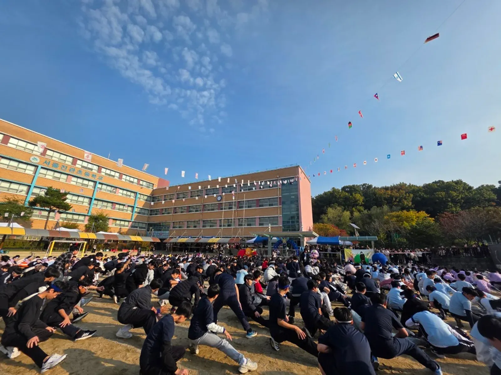

행사 준비 · 2026년 11월 24일
크리스마스 게임, 아이가 완성하는 그림 카드 세 장
크리스마스 게임으로 선물 상자가 변하는 그림 세 장을 섞고, 아이가 처음과 마지막 그림을 고르게 해 보세요. 글을 읽지 않아도 손으로 가리켜 답할 수 있고, 익숙해지면 가운데 장면을 새로 그려 자기 이야기를 만들 수 있습니다.

- 빈 상자, 목도리를 넣은 상자, 리본을 묶은 상자로 그림 한 벌을 만듭니다.
- 먼저 두 그림의 차이를 보고, 그 차이를 설명해 줄 가운데 그림을 고릅니다.
- 다른 순서라도 앞뒤가 어떻게 이어지는지 보여 주면 아이가 만든 이야기로 읽습니다.

1. 크리스마스 게임 준비물은 같은 상자의 그림 세 장
어린이에게 “크리스마스 하면 뭐가 떠올라요?”라고 물으면 답할 말이 너무 많을 수 있습니다. 대신 뚜껑이 열린 빈 상자와 리본이 묶인 닫힌 상자를 보여 주고 “어디가 달라졌나요?”라고 물어보세요.
고르기부터 시작하면 이야기의 출발점이 눈앞에 생깁니다.
종이 세 장에 같은 상자를 같은 방향으로 크게 그립니다. 첫 그림은 속이 비어 있고, 둘째는 접힌 목도리의 끝이 상자 밖으로 보이고, 셋째는 뚜껑 위에 리본이 올라갑니다.
숫자나 글자로 차례를 미리 표시하지 않습니다.
색을 빼도 그림의 차이가 보여야 합니다. 상자 색만 초록에서 빨강으로 바꾸는 대신 열린 뚜껑, 밖으로 나온 목도리 술, 커다란 리본 고리처럼 손으로 짚을 모양을 남겨 주세요.
직접 그린 카드를 교실 뒤에서 한번 봅니다. 목도리 끝이 상자 테두리와 겹쳐 안 보인다면 장식을 더 그리지 말고 천 끝을 더 길게 내놓습니다.
아이가 봐야 할 것은 그림 솜씨가 아니라 달라진 한 부분입니다.
2. 유아 반은 두 장으로 문을 엽니다
빈 상자와 목도리가 든 상자만 나란히 놓습니다. 선생님이 목도리를 넣는 흉내를 보인 뒤 “방금 우리가 만든 상자가 어디 있을까?”라고 물어보세요.
상자 이름을 말하지 않아도 손끝이나 눈길로 고른 그림을 선생님이 받아 읽습니다.
이제 남은 그림을 펼치고 “리본을 묶으면 어떤 그림이 될까?”라고 묻습니다. 대답하기 전에 아이 앞으로 카드를 밀어 정답을 대신 골라 주지는 않습니다.
고른 뒤에는 세 장을 이어 놓고 처음부터 한 번만 읽습니다.
| 펼칠 그림 | 그림을 보며 건넬 말 | 아이가 할 수 있는 일 |
|---|---|---|
| 열린 상자와 목도리 상자 | 목도리가 들어간 쪽을 찾아 줄래? | 보이는 술을 가리키거나 상자에 넣는 흉내 내기 |
| 목도리 상자와 리본 상자 | 이제 뚜껑을 닫으면 어떤 모양일까? | 리본 그림을 고르거나 묶는 손짓 하기 |
| 모두 펼친 세 장 | 어느 상자부터 이야기를 들려줄까? | 시작할 그림을 정하고 교사와 함께 넘기기 |
처음 보는 아이에게 세 장을 외워 뒤집는 기억 놀이로 바꾸지 않아도 됩니다. 카드가 내내 보이는 상태에서 그림을 다시 비교할 수 있어야 왜 이쪽을 골랐는지 손으로 보여 줄 수 있습니다.
3. 학교 판은 가운데 장면을 비워 둡니다
저학년 교실이라면 처음과 마지막 그림만 칠판에 붙입니다. 가운데에 목도리가 든 상자와 빈 종이 한 장을 놓고 “우리가 보지 못한 동안 무슨 일이 있었을까?”라고 물으면 이미 있는 그림을 고르거나 새로 그려 넣을 수 있습니다.
예를 들어 누군가 양말을 넣는 그림을 골라도 마지막 상자가 닫혀 있어 내용물이 보이지 않는다면 그 이야기는 이어집니다. 눈앞의 그림으로 알 수 있는 일과 아이가 보탠 일을 나누어 “상자 밖에는 리본이 보이고, 안에는 네가 그린 양말이 있구나”라고 받아 주세요.

빠진 장면에 들어갈 답은 하나가 아닙니다. 시작과 끝을 바꿀 수 없는 판이라면 두 그림에 어긋나지 않게 가운데를 만들고, 자유 이야기 판이라면 세 장의 순서도 아이가 정하게 합니다.
두 판의 약속을 한꺼번에 주지 마세요.
4. 거꾸로 놓았을 때도 이야기를 들어 봅니다
리본 상자를 먼저 놓고 빈 상자를 마지막에 둔 아이가 있다면 “틀렸어”보다 “리본은 어디로 갔을까?”라고 물어볼 만합니다. 포장을 풀어 목도리를 꺼내 두었다는 이야기라면 그림은 거꾸로여도 사건은 자연스럽습니다.
말로 설명하고 싶지 않은 아이와는 교사가 손을 리본처럼 묶었다 푸는 시늉을 해 봅니다. 아이가 고개를 끄덕이거나 다른 그림으로 손을 옮기면 그 선택대로 넘깁니다.
가리키지 않고 보는 아이에게 억지로 새 결말을 정해 달라고 하지 않습니다.
여러 모둠이 함께한다면 한 친구가 완성한 순서를 곧바로 전부 따라 놓게 하지 마세요. 한쪽은 포장을 시작한 이야기, 다른 쪽은 선물을 풀어 보는 이야기로 읽으면 같은 세 장이 다른 뜻이 되는 순간을 함께 볼 수 있습니다.

5. 끝낼 때는 한 장을 아이에게 돌려줍니다
모든 모둠이 차례로 발표할 필요는 없습니다. “우리 반 상자에는 뭐가 들었지?”
하고 다시 묻고, 아이들이 이야기할 때 쓴 그림을 하나씩 골라 펼쳐 보이게 합니다. 그림을 가리킨 친구도 같은 끝인사에 함께할 수 있습니다.
한 번 더 할 때는 규칙 대신 그림 속 물건을 바꿉니다. 예컨대 목도리 대신 털모자를 그리면 새로 설명할 것은 모자의 모습뿐입니다.
익숙한 틀에 물건만 바꾸고도 아이가 스스로 첫 장을 찾는지 보세요.
교사는 아이들이 평소 쓰는 낱말을, 진행자는 카드가 바뀌는 순간에 던질 질문을 준비합니다. “포장해요”보다 “뚜껑을 닫아요”가 익숙한 반이라면 평소의 표현을 그대로 건네 주면 됩니다.
학교·유아 행사 안내에서 참여 대상별 진행을, 레크리에이션 강사 안내에서 전문 진행자의 역할을 확인할 수 있습니다. 자동 견적서에서 필요한 항목을 살피고 견적 문의에 교사가 준비할 그림과 진행을 맡길 판을 구분해 적어 주세요.
자주 묻는 질문
그림을 직접 그리지 못해도 놀이를 만들 수 있나요?
교사가 같은 상자를 비운 모습, 목도리를 담은 모습, 뚜껑에 리본을 얹은 모습을 같은 자리에서 찍어 카드로 쓸 수 있습니다. 주변 물건이 아니라 상자의 달라진 부분이 보이게 합니다.
반마다 이야기 결말이 다르면 어떻게 마치나요?
같은 정답으로 맞추지 말고 마지막 그림 하나씩을 함께 봅니다. 아이가 만든 상자가 열렸는지 닫혔는지만 비교해도 짧은 마무리가 됩니다.
힐링엔터테인먼트에 어린이 레크리에이션 진행을 맡길 수 있나요?
힐링엔터테인먼트는 학교·유아 행사를 맡으며 대표 MC 이현호가 직접 진행합니다.
행사 날짜가 정해지셨나요?
날짜 · 지역 · 인원 · 행사 종류만 알려 주시면 행사에 맞춰 상담 · 견적을 안내드립니다. 행사 중엔 통화가 어려우니 문자 · 카톡을 남겨 주세요.